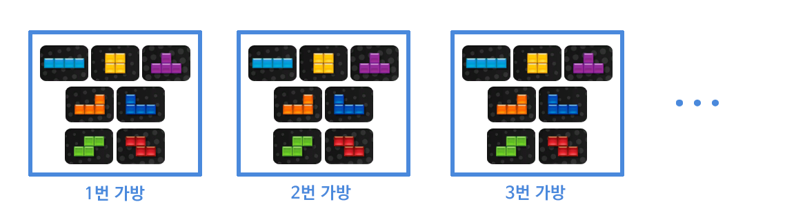

뿌요뿌요 테트리스를 기준으로 작성했지만 Tetris Effects, Tetris 99, Jstris 등 다른 테트리스 게임도 거의 같은 체계를 따릅니다.
1. 블럭 이름
테트리스에 관한 글을 읽으려면 블럭의 이름을 알아 둬야 편리합니다.
일반 명사로 테트로미노(Tetromino)라 부르고, 테트리스 컴퍼니에서는 테트리미노(Tetrimino)라 부릅니다. 줄여서 미노(Mino)라고 부르거나 그냥 블럭(block)으로 부르는 경우가 많습니다.
미노에는 총 7종이 있습니다.

보통 I미노, O미노, T미노라고 부르니 어느정도 외워놓으면 편리합니다.
2. 미노가 나오는 규칙
미노가 완전히 무작위로 나오는 것은 아니고 나오는 규칙이 있습니다. 바로 7종의 미노가 한 묶음으로 나온다는 겁니다. 영어 사이트에서는 Random Generator라고 부르는 규칙입니다.
n번째 나오는 미노를 n번 미노라 합시다. 그러면 1~7번 미노는 I, O, T, L, J, S, Z가 무작위로 나옵니다. 그리고 8~14번 미노는 또 I, O, T, L, J, S, Z가 무작위로 나옵니다. 그리고 15~21번 미노는 또 I, O, T, L, J, S, Z가 무작위로 나옵니다... 이후에도 같은 식으로 반복됩니다.
위 그림에서 1번~7번 미노는 왼쪽, 8번~14번 미노는 가운데, 15~21번 미노는 오른쪽에 세웠습니다. NEXT까지 합하면 27개의 미노가 보이는데, 위에서 말씀드린 그대로 7종이 한 세트로 나오고 있는 걸 확인하실 수 있습니다.
3. 필드
필드(Playfield) 또는 경기장은 게임 자체가 이루어지는 평면을 말합니다. 익숙하게 보셨을 그림입니다.
기본 필드 크기는 테트리스가 가로x세로 10x20입니다

그리고 필드 위쪽에는 숨겨진 필드가 있는데 보통 2~4줄 정도 있으나 구체적인 수치나, 숨겨진 필드의 블럭을 삭제하는지 여부는 게임에 따라 조금씩 다릅니다.
5. 줄 없애기
영어로는 라인 클리어(Line Clear)라고 합니다.
한 줄 - 싱글(Single)
두 줄 - 더블(Double)
세 줄 - 트리플(Triple)
네 줄 - 테트리스(Tetris)
각 공격은 상대방에게 쓰레기 줄을 보냅니다.
싱글 - 0줄더블 - 1줄
트리플 - 2줄
테트리스 - 4줄
보시면 한 줄만 없애는 건 (콤보가 아니라면) 공격력이 없습니다. 따라서 한 줄만 없애는 행위는 가능한 한 줄여야 하고, 네 줄을 모아 한 번에 없애거나 아래의 T스핀을 활용해야 합니다. 참고로 공격을 해도 상대가 블럭을 내려놓기 전에는 쓰레기 줄이 생기지 않습니다.
6. 블럭의 (반)시계방향 회전
많은 초보 분들이 잊고 지내시지만, 테트리스 블럭에는 시계방향 회전(우회전)과 반시계방향 회전(좌회전)이 있습니다. 기본 설정에서는 시계방향 회전이 X, 반시계방향 회전이 Z입니다.
T스핀을 할 때 구분하여 사용해야 할 필요가 있으며, 블럭 놓는 속도를 빠르게 할 때에도 익혀두면 좋습니다.7. T스핀
T스핀(T-Spin)은 T미노를 이용해 특별한 방법으로 줄을 없애는 기술을 말합니다. 그냥 블럭을 없애기만 하는 게임이 되면 단조로우니까 특전을 만들어 줬다고 생각하시면 됩니다. 아래는 예시입니다.

T스핀도 상대방에게 쓰레기 줄을 보냅니다. 상대방이 테트리스 유저라면 공격력은 다음과 같습니다.
T스핀 미니 - 0줄T스핀 싱글 - 2줄
T스핀 더블 - 4줄
T스핀 트리플 - 6줄
T스핀이 더 궁금하시다면 T스핀 기술을 참고해주세요.
8. 백투백
백투백(Back-to-Back; BtB, B2B)은 T스핀 또는 테트리스(4줄 삭제)를 이용해 공격을 연속으로 했을 때 공격 보너스를 주는 것을 말합니다. 여기에서 연속이란 곧바로 이어지는 것을 말하는 것은 아니고, 줄을 없애는 행위를 T스핀 또는 테트리스로만 하면 된다는 의미입니다.
백투백의 공격 보너스 데미지는 한 줄을 더 추가로 보냅니다.
테트리스 - 4줄백투백 테트리스 - 5줄 T스핀 미니 - 0줄
백투백 T스핀 미니 - 1줄 T스핀 싱글 - 2줄
백투백 T스핀 싱글 - 3줄 T스핀 더블 - 4줄
백투백 T스핀 더블 - 5줄 T스핀 트리플 - 6줄
백투백 T스핀 트리플 - 7줄
9. 콤보
줄을 연속하여 없애는 것을 콤보(Combo)라고 합니다. 일본어판에서는 連을 일본어로 읽어서 렌(REN)이라고 표시합니다.
콤보에는 추가 공격력이 있습니다. 위에서 본 공격력에 더해서 추가로 데미지를 주는 것입니다. 상대가 테트리스라면 추가 공격력은 아래와 같습니다. 줄을 없애는 것은 0콤보로 취급합니다. 콤보 공격력0 → +0
1 → +0
2 → +1 (총계:1)
3 → +1 (총계:2)
4 → +2 (총계:4)
5 → +2 (총계:6)
6 → +3 (총계:9)
7 → +3 (총계:12)
8 → +4 (총계:16)
9 → +4 (총계:20)
10 → +4 (총계:24)
11 → +5 (총계:29)
12 → +5 (총계:34)
이후 +5